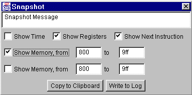

Snapshot

The Snapshot dialog allows capturing
information at the current simulation
time and either adding it to the log
file or copying it to the clipboard
(where it can be pasted into
documents). The following fields
control what gets snapped:
- Snapshot Message is a text field where you can type a message that will be sent to
the log file or copied to the clipboard.
- Show Time copies the current simulation time.
- Show Registers copies the CPU registers.
- Show Next Instruction shows the next instruction to be executed.
- Show Memory displays a range of memory locations. Up to two ranges that can be
displayed in a single snapshot.